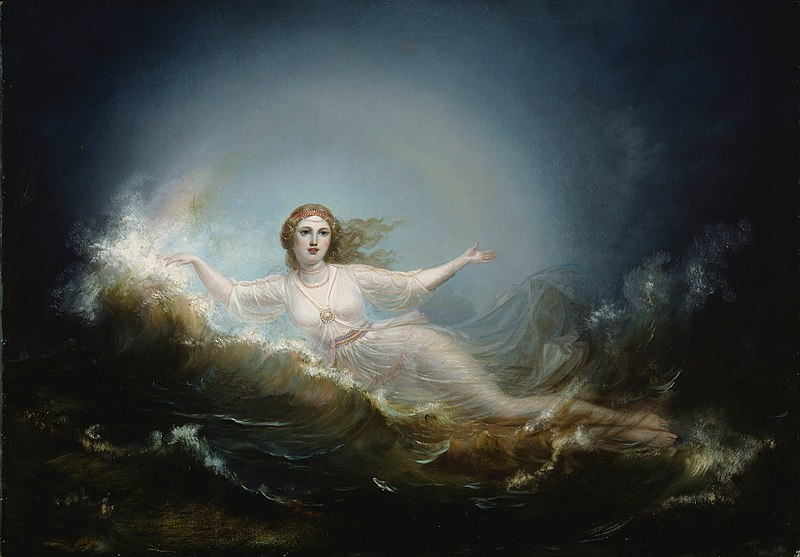
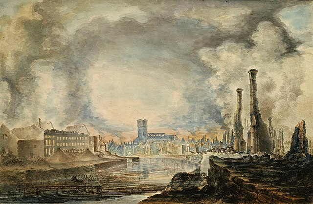

Context
Every Scandinavian country has a rich history of folklore. You might think that people recounted each other's epic, national tales of the ásatrú gods or of other supernatural elements. But it is far from that. In today's age, countries are strongly centralized, and particularly so in terms of culture: do you know any local tales, influential figures or histories? Compared to the old days, we know next to nothing about our local culture and heritage.

The Goddess Ilmatar, one of the characters that are recounted in Kalevala
That is why it is important to realize that 'Finland's Folklore' is, in essence, a mere term. You would not believe how often locals would devise tales of closeby landmarks, remarkable neigbors and lovestories. If you ask me, an Icelander, the cold winter months and the character of Scandinavian people have driven folklore to such rich depths. That's why Scandinavians proudly proclaim that while other nations have statues and decorative buildings, they have their literature and folklore that has remained.
Given this context, it might be easier for you to understand why an epic poem like Kalevala is a national unit of pride. Elias Lönnrot is the one who wrote Kalevala in 1835, and while his work is considered Finland's national epic, the oral stories that Lönnrot were abridged into this written work are appreciated by the Finnish in the strongest sense.
Content
In terms of content, Kalevala encompasses a series of tales. The best known version of Kalevala has 50 stories for instance, and they are called runot in Finnish. Lönnrot collected the stories in hopes of retaining some of Finland's oral culture; he had apparently seen it fading away and hoped to immortalize it by creating this work.
One downside of this transcription is that we don't know the extent of Lönnrot's personal agency: to what extent are the folktales original, and where exactly did Lönnrot make a personal contribution to the stories? What we do know is that Elias Lönnrot sought to unravel the stories as purely as possible. He made field trips to learn about the stories first hand, and to hear locals recounting them in theír versions. As a student of Turku university, he could have sought other ways and utilized secondary sources to form his works, but the field trips illustrate how he chose to do meticulate primary research. However, it is unsure how strongly he added a 'personal flavor' to the stories that he heard. But the gist of each story remains, and it is valuable enough that he chose to write down a fading Finnish oral history.

In Lönnrot's time, Turku was quite an academic hub. It had a university and related academic buildings. Today, the city is best known for The Great Fire of Turku (1827), one of the (if not thé) largest fires in Scandinavia to date.
Reading
Here is a selection of some of the tales that the Kalevala includes:
-
The marriage of Lemminkäinen and Kyllikki of the Island
-
The feud between Untamo and Kalervo; Kullervo’s unfortunate upbringing; an antifertility charm
-
The death of Ilmarinen’s lady
-
The theft of the Sampo from North Farm
Again, you see how plenty and local the folktales are. To read the 50 tales in Kalevala is just the tip of the iceberg. However, it is a beautiful glimpse into the life and oral tradition of the Finnish forefathers. We were more sedentiary and had more time for things like these not very long ago. For this reason, I recommend you to read some of the stories that make up Kalevala.
If you don't like reading, I made an audio exerpt from one of the tales here. This is part of the tale of Wainioinen's Hapless Journey.
"Wainamoinen, old and truthful,
Now arranges for a journey
To the village of the Northland,
To the land of cruel winters,
To the land of little sunshine,
To the land of worthy women;
Takes his light-foot, royal racer,
Then adjusts the golden bridle,
Lays upon his back the saddle,
Silver-buckled, copper-stirruped,
Seats himself upon his courser,
And begins his journey northward;"